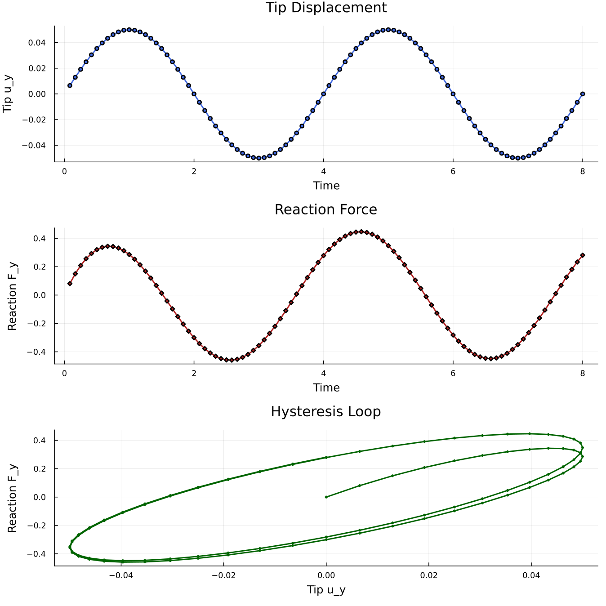

DMA cantilever beam
A 3D cantilever beam under sinusoidal, displacement-controlled loading, solved with the VEVP_MOAMMM viscoelastic-viscoplastic model. The runnable script is examples/cantilever_beam_dma.jl and can be executed from the repository root with:
julia --project=. examples/cantilever_beam_dma.jlThe direct run writes plot and VTK output. Install Plots.jl and WriteVTK.jl in the active environment before running it with output enabled.
For a short run without plot or VTK output, start Julia from the repository root with julia --project=. and run:
include("examples/cantilever_beam_dma.jl")
result = run_cantilever_beam_dma(; nx=3, ny=1, nz=1, nsteps=4, vtk=nothing)
println("converged steps: ", result.converged_steps)Problem setup
The beam extends along the x-axis from the clamped root at x = 0 to the controlled tip at Lx. The root face is fixed in all three displacement directions. The tip face is fixed in x and z, while the y-displacement follows u_y = A sin(4*pi*t/total_time).
This prescribed displacement creates a cyclic loading-unloading path. The force-displacement loop in Figure 1 shows the phase lag and indicates energy dissipation of the viscoelastic response.

Figure 1. Hysteresis loop showing viscoelastic response of the cantilever.Grid, interpolation, constraints
We set up a 3D hexahedral beam, a quadratic displacement field, and the two Dirichlet boundaries with standard Ferrite.jl calls:
nx, ny, nz = 8, 2, 2 # default mesh resolution
Lx, Ly, Lz = 5.0, 1.0, 1.0 # beam dimensions
grid = generate_grid(Hexahedron, (nx, ny, nz), Vec(0.0, 0.0, 0.0), Vec(Lx, Ly, Lz)) # create the beam mesh
interpolation = Serendipity{RefHexahedron, 2}()^3 # quadratic displacement shape functions in 3D
dh = DofHandler(grid) # create the dof handler for the grid
add!(dh, :u, interpolation) # add displacement dofs under the field name `:u`
close!(dh) # finalize the dof numbering
amplitude = 0.05 # prescribed tip-displacement amplitude
total_time = 8.0 # duration of two loading cycles
ch = ConstraintHandler(dh) # collect Dirichlet boundary conditions
add!(ch, Dirichlet(:u, getfacetset(grid, "left"), (x, t) -> [0.0, 0.0, 0.0], [1, 2, 3])) # clamp the root
add!(ch, Dirichlet(:u, getfacetset(grid, "right"), (x, t) -> [0.0, amplitude * sin(4.0 * pi * t / total_time), 0.0], [1, 2, 3])) # drive the tip in y
close!(ch) # finalize the constraint dataFor the tip reaction, only the y-component displacement DOFs on the right face are collected:
function _facet_component_dofs(dh, facets, interpolation, component)
ncomp = Ferrite.n_components(interpolation) # number of vector components in :u
base_interpolation = Ferrite.get_base_interpolation(interpolation) # scalar shape functions behind the vector field
facet_dofs = Ferrite.dirichlet_facetdof_indices(base_interpolation) # local scalar dofs on each facet
facet_cache = FacetCache(dh) # reusable cache for cell/facet dof lookup
dofs = Int[] # collected global dof numbers
for facet in facets
reinit!(facet_cache, facet) # load the current boundary facet
_, facet_id = facet # local face number in the current cell
for local_shape_dof in facet_dofs[facet_id] # scalar shape dofs on this face
local_component_dof = (local_shape_dof - 1) * ncomp + component # select component 2, i.e. y
push!(dofs, celldofs(facet_cache)[local_component_dof]) # map local dof to global dof
end
end
sort!(dofs) # neighboring facets share edge/corner dofs
unique!(dofs) # keep each reaction dof once
return dofs
end
react_dofs = _facet_component_dofs(dh, getfacetset(grid, "right"), interpolation, 2) # right-face y dofsreact_dofs is only used to extract the reaction force from the residual vector before constrained entries are zeroed. It does not affect assembly or the actual Dirichlet constraints.
Material
We apply VEVP_MOAMMM with eight bulk and eight shear Maxwell branches:
mat = VEVP_MOAMMM(
6, 80.0, 40.0, 0.25, 0.3, 2.0, 1.0,
40.0, 10.0, 5.0, 1.0, 45.0, 10.0, 5.0, 1.0,
1.0, 0.1, 0.01,
[60.0, 70.0, 80.0, 90.0, 100.0, 110.0, 120.0, 130.0],
[0.2625, 0.3375, 0.4125, 0.4875, 0.60, 0.75, 0.9375, 1.20],
[60.0, 70.0, 80.0, 90.0, 100.0, 110.0, 120.0, 130.0],
[0.2625, 0.3375, 0.4125, 0.4875, 0.60, 0.75, 0.9375, 1.20],
)The relaxation times are chosen near the loading period to cause a significant phase lag. With the default amplitude and parameters, the response stays in the viscoelastic range, so the visible hysteresis is driven by the Maxwell branches rather than by plastic flow. See VEVP MOAMMM for the parameter glossary.
Assembler
create_assembler combines the material, dof handler, and constraints into the reusable FerriteSolidMechanics object:
assembler = create_assembler(mat, dh, ch; quadrature_order=2)The assembler stores one material state per quadrature point of each nonlinear cell and reuses its global stiffness matrix, residual vector, and per-cell element matrices/vectors across time steps.
Time and Newton loop
The prescribed tip displacement is advanced in equal physical time steps. stiffness_matrix evaluates the material response for the current trial displacement, and update_states!(assembler) commits the converged material state:
u = zeros(ndofs(dh)) # allocate the displacement vector
nsteps = 96 # number of equal physical time steps
max_newton = 180 # maximum Newton iterations per time step
newton_tol = 1e-6 # residual tolerance
dt = total_time / nsteps # physical time increment
for step in 1:nsteps # advance the imposed displacement
t = step * dt # current physical time
update!(ch, t) # update the sinusoidal boundary value
apply!(u, ch) # write prescribed displacements into `u`
for iter in 1:max_newton # Newton iterations for this time step
K, r = stiffness_matrix(assembler, u; dt=dt) # constitutive evaluation and tangent/residual assembly
fy_tip = isempty(react_dofs) ? 0.0 : sum(r[react_dofs]) # exract reaction before constrained dofs are zeroed
apply_zero!(K, r, ch) # apply constraints for constrained solving
if norm(r) < newton_tol # stop once the residual is small enough
break
end
u .-= K \ r # update the displacement vector
end
update_states!(assembler) # commit material states after convergence
endHere, dt is the physical time increment of the sinusoidal loading. Because VEVP_MOAMMM is strain rate-dependent, this value enters the local viscoelastic-viscoplastic update and affects the result.
The tip reaction must be read before apply_zero!. After apply_zero!, the constrained residual entries are overwritten to consider the Cirichlet boundary conditions and no longer contain the reaction force.
Postprocessing
We record three histories at each converged step: time t, tip displacement u_y, and tip reaction F_y. After the last step, compute_stresses evaluates the Cauchy stress field:
stresses = compute_stresses(assembler, u)phase_lag_degrees(result) estimates the first-harmonic phase lag between tip displacement and reaction force. plot_results(result) writes a three-panel figure with displacement history, reaction history, and the hysteresis loop.
With the default settings, the direct run prints a short summary similar to:
Solved 3D cantilever beam DMA
cells: 32
dofs: 783
converged steps: 96
peak tip uy: 0.05
force/displacement phase lag: 38.92 degrees
stress entries: 256Output files are written to examples/results/cantilever_beam_dma/ when plotting or VTK output is enabled.
Swapping the material model
The solve loop above can drive any material model that is a subtype of AbstractMaterial. To swap VEVP_MOAMMM for another material model, change only the material constructor:
# Same script, different material:
mat = J2Plasticity(70e3, 0.3, 250.0, 1e3)
mat = VEVP_Zhao2021_AD(1e3, 1e3, 8, 0.1, 0.5, 0.8, 0.5, 1e-3, 1.0, 2.0, 4.0, 0.0, 0.5, 1.0)The assembler calls the new material's element routine and state-update methods through the same interface.
Plain program
The full runnable source is rendered from examples/cantilever_beam_dma.jl:
using Ferrite
using FerriteSolidMechanics
using LinearAlgebra
"""
run_cantilever_beam_dma(; kwargs...)
Solve a 3D cantilever beam under sinusoidal displacement control (DMA-style) using the
VEVP_MOAMMM viscoelastic-viscoplastic material model.
The beam lies along the x-axis from x=0 (root) to x=Lx (tip). The root face is fully
clamped. The tip face is clamped in x and z while a sinusoidal y-displacement is
prescribed, mimicking a driven jaw.
Quadratic serendipity hexahedral elements are used.
Pass `vtk="my/output/dir"` to write a ParaView PVD collection with the displacement field
at every converged time step.
"""
function run_cantilever_beam_dma(;
nx::Int=8,
ny::Int=2,
nz::Int=2,
Lx::Float64=5.0,
Ly::Float64=1.0,
Lz::Float64=1.0,
amplitude::Float64=0.05,
total_time::Float64=8.0,
nsteps::Int=96,
max_newton::Int=20,
newton_tol::Float64=1e-6,
vtk::Union{String,Nothing}=nothing,
)
grid = generate_grid(Hexahedron, (nx, ny, nz), Vec(0.0, 0.0, 0.0), Vec(Lx, Ly, Lz))
interpolation = Serendipity{RefHexahedron, 2}()^3
dh = DofHandler(grid)
add!(dh, :u, interpolation)
close!(dh)
# Boundary conditions
# Root: fully clamped
# Tip: clamped in x and z, sinusoidal y-displacement
ch = ConstraintHandler(dh)
add!(ch, Dirichlet(:u, getfacetset(grid, "left"), (x, t) -> [0.0, 0.0, 0.0], [1, 2, 3]))
add!(ch, Dirichlet(:u, getfacetset(grid, "right"), (x, t) -> [0.0, amplitude * sin(4.0 * pi * t / total_time), 0.0], [1, 2, 3]))
close!(ch)
# Reaction DOFs for the tip y-displacement. These are only used to read
# reactions from the residual before constrained entries are zeroed.
react_dofs = _facet_component_dofs(dh, getfacetset(grid, "right"), interpolation, 2)
# Material: VEVP_MOAMMM with 8 Maxwell branches. This is more than
# the demo needs, but shows the multi-branch interface.
mat = VEVP_MOAMMM(
6, 80.0, 40.0, 0.25, 0.3, 2.0, 1.0,
40.0, 10.0, 5.0, 1.0, 45.0, 10.0, 5.0, 1.0,
1.0, 0.1, 0.01,
[60.0, 70.0, 80.0, 90.0, 100.0, 110.0, 120.0, 130.0],
[0.2625, 0.3375, 0.4125, 0.4875, 0.60, 0.75, 0.9375, 1.20],
[60.0, 70.0, 80.0, 90.0, 100.0, 110.0, 120.0, 130.0],
[0.2625, 0.3375, 0.4125, 0.4875, 0.60, 0.75, 0.9375, 1.20],
)
assembler = create_assembler(mat, dh, ch; quadrature_order=2)
u = zeros(ndofs(dh))
u_prev = similar(u)
dt = total_time / nsteps
converged_steps = 0
history_t = Float64[]
history_uy = Float64[]
history_fy = Float64[]
# VTK: open PVD collection (requires WriteVTK)
if vtk !== nothing
Base.invokelatest(_dma_ensure_writevtk_loaded)
mkpath(dirname(vtk))
end
pvd = vtk !== nothing ? Base.invokelatest(_dma_open_pvd, vtk) : nothing
for step in 1:nsteps
t = step * dt
u_prev .= u
update!(ch, t)
apply!(u, ch)
converged = false
final_res_norm = 0.0
fy_tip = 0.0
for iter in 1:max_newton
K, r = stiffness_matrix(assembler, u; dt=dt)
# Reaction force: extract BEFORE apply_zero! zeros out constrained DOFs
fy_tip = isempty(react_dofs) ? 0.0 : sum(r[react_dofs])
apply_zero!(K, r, ch)
final_res_norm = norm(r)
if final_res_norm < newton_tol
converged = true
break
end
u .-= K \ r
end
if !converged
u .= u_prev
error("Newton iteration did not converge at time step $step (t=$t, norm(r)=$final_res_norm)")
end
update_states!(assembler)
converged_steps += 1
# VTK: write converged state to PVD collection
if pvd !== nothing
Base.invokelatest(_dma_write_vtk_step!, pvd, dh, u, t, "$(vtk)_$step")
end
# Tip displacement (average of prescribed DOFs)
uy_tip = isempty(react_dofs) ? 0.0 : sum(u[react_dofs]) / length(react_dofs)
push!(history_t, t)
push!(history_uy, uy_tip)
push!(history_fy, fy_tip)
end
# VTK: finalize PVD collection
pvd !== nothing && Base.invokelatest(_dma_close_pvd, pvd)
stresses = compute_stresses(assembler, u)
return (
u=u,
stresses=stresses,
grid=grid,
dh=dh,
ch=ch,
assembler=assembler,
converged_steps=converged_steps,
history_t=history_t,
history_uy=history_uy,
history_fy=history_fy,
)
end
function _dma_ensure_writevtk_loaded()
try
@eval using WriteVTK
catch
throw(ArgumentError("VTK output requires WriteVTK.jl in the active environment"))
end
return nothing
end
# Internal helpers: called via invokelatest because WriteVTK is loaded at runtime
_dma_open_pvd(vtk) = paraview_collection(vtk)
_dma_close_pvd(pvd) = vtk_save(pvd)
function _dma_write_vtk_step!(pvd, dh, u, time, path)
VTKGridFile(path, dh) do vtk_file
write_solution(vtk_file, dh, u)
pvd[time] = vtk_file
end
return nothing
end
function _facet_component_dofs(dh, facets, interpolation, component::Int)
ncomp = Ferrite.n_components(interpolation)
1 <= component <= ncomp || throw(ArgumentError("component must be in 1:$ncomp"))
# Ferrite interleaves vector dofs by component, so use the scalar base
# interpolation to find which shape functions live on each facet.
base_interpolation = Ferrite.get_base_interpolation(interpolation)
facet_dofs = Ferrite.dirichlet_facetdof_indices(base_interpolation)
facet_cache = FacetCache(dh)
dofs = Int[]
for facet in facets
reinit!(facet_cache, facet)
_, facet_id = facet
for local_shape_dof in facet_dofs[facet_id]
# Scalar shape dof -> this component's local dof -> global dof
local_component_dof = (local_shape_dof - 1) * ncomp + component
push!(dofs, celldofs(facet_cache)[local_component_dof])
end
end
sort!(dofs)
unique!(dofs)
return dofs
end
# Internal helper: called via invokelatest to avoid issues when Plots is loaded during runtime.
function _plot_results_impl(result, outdir)
t = result.history_t
uy = result.history_uy
fy = result.history_fy
# --- Panel 1: Tip displacement vs time ---
p1 = plot(
t, uy,
linewidth=2,
color=:royalblue,
xlabel="Time",
ylabel="Tip u_y",
title="Tip Displacement",
legend=false,
marker=:circle,
markersize=3,
)
# --- Panel 2: Reaction force vs time ---
p2 = plot(
t, fy,
linewidth=2,
color=:firebrick,
xlabel="Time",
ylabel="Reaction F_y",
title="Reaction Force",
legend=false,
marker=:diamond,
markersize=3,
)
# --- Panel 3: Hysteresis loop (F vs u) ---
# Close the loop by prepending the origin
p3 = plot(
vcat(0.0, uy),
vcat(0.0, fy),
linewidth=2,
color=:darkgreen,
xlabel="Tip u_y",
ylabel="Reaction F_y",
title="Hysteresis Loop",
legend=false,
marker=:auto,
markersize=2,
)
# --- Compose figure ---
plt = plot(p1, p2, p3,
layout=(3, 1),
size=(900, 900),
dpi=150,
)
mkpath(outdir)
outpath = joinpath(outdir, "cantilever_dma.png")
savefig(plt, outpath)
println("Plot saved to: $outpath")
return outpath
end
"""
plot_results(result; outdir=".")
Write a three-panel PNG (tip displacement, reaction force, and force-displacement
hysteresis loop) from a DMA cantilever result. Requires `Plots.jl`.
"""
function plot_results(result; outdir=".")
try
@eval using Plots
catch
throw(ArgumentError("plot_results requires Plots.jl in the active environment"))
end
return Base.invokelatest(_plot_results_impl, result, outdir)
end
"""
phase_lag_degrees(result)
Estimate the first-harmonic phase lag between the recorded tip displacement
and reaction force histories, in degrees.
"""
function phase_lag_degrees(result)
t = result.history_t
u = result.history_uy
f = result.history_fy
isempty(t) && return NaN
total_time = maximum(t)
omega = 4.0 * pi / total_time
s = sin.(omega .* t)
c = cos.(omega .* t)
phase_u = atan(sum(u .* c), sum(u .* s))
phase_f = atan(sum(f .* c), sum(f .* s))
lag = abs(mod(phase_f - phase_u + pi, 2.0 * pi) - pi)
return lag * 180.0 / pi
end
if abspath(PROGRAM_FILE) == @__FILE__
results_dir = joinpath(@__DIR__, "results", "cantilever_beam_dma")
result = run_cantilever_beam_dma(; vtk=joinpath(results_dir, "cantilever_dma"))
println("Solved 3D cantilever beam DMA")
println(" cells: $(getncells(result.grid))")
println(" dofs: $(ndofs(result.dh))")
println(" converged steps: $(result.converged_steps)")
println(" peak tip uy: $(maximum(abs, result.history_uy))")
println(" force/displacement phase lag: $(round(phase_lag_degrees(result); digits=2)) degrees")
println(" stress entries: $(length(result.stresses))")
plot_results(result; outdir=results_dir)
end